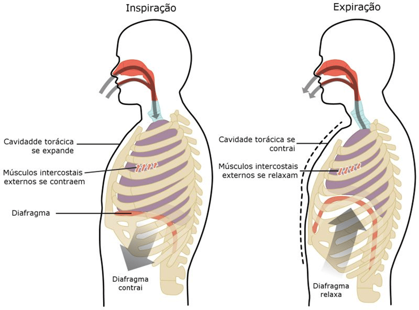

Os músculos da respiração também são chamados de “músculos da bomba respiratória“, formam um arranjo complexo na forma de foles semi-rígidos ao redor dos pulmões.
Todos os músculos que estão ligados à caixa torácica humana têm o potencial inerente de causar uma ação de respiração.
Músculos que ajudam na expansão da cavidade torácica são chamados de músculos inspiratórios, porque ajudam na inspiração, enquanto aqueles que comprimem a cavidade torácica são chamados de músculos expiratórios e induzem a expiração.
Esses músculos possuem exatamente a mesma estrutura básica de todos os outros músculos esqueléticos e trabalham em conjunto para expandir ou comprimir a cavidade torácica.
A especialidade desses músculos é que eles são compostos de fibras musculares resistentes à fadiga, eles são controlados por mecanismos voluntários e involuntários (se quisermos respirar, podemos, mesmo se não pensarmos em respirar o corpo automaticamente).

Inspiratórios
Os músculos inspiratórios se contraem para atrair ar para os pulmões.
O músculo mais importante da inspiração é o diafragma; entretanto, os intercostais externos auxiliam na respiração silenciosa normal.
A contração do diafragma aumenta o espaço na cavidade torácica e os pulmões se enchem de ar do ambiente externo.
Acessórios
Os músculos acessórios de inspiração são:
Esternocleidomastóideo e escalenos.
Elescontribuem menos durante os períodos normais de respiração e mais durante os períodos de respiração ativa, por exemplo, durante as manobras de exercício e de respiração forçada.
Expiratórios
A expiração é um processo passivo porque os pulmões naturalmente querem recuar e colapsar.
Durante a expiração, os pulmões esvaziam sem muito esforço de nossos músculos.